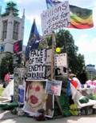

16th February 2009 Website Launched today and it is very good because there has been a lot of time and effort put into the production of this page. Blah Blah.

17th Februart 2009 国会の周りでデモするなって国会の周りでデモするなって国会の周りでデモするなって国会の周りでデモするなって国会の周りでデモするなって国会の周りでデモするなって国会の周りでデモするなって国会の周りでデモするなって国会の周りでデモするなって国会の周りでデモするなって国会の周りでデモするなって国会の周りでデモするなって国会の
18th February 2009Brian & Co. Parliament Square SW1 is a new documentary film by Japanese film-maker Yumiko Hayakawa. The film details life in and around Brain Haw’s peace campaign in Parliament Square, London. Filmed over the course of one and a half years, the film captures this unique campaign through interviews with Brain, his supporters, former Labour MP Tony Benn and UK/Japanese peace campaigners. The film also sheds light on how freedom of speech is threatened in the UK and people’s imaginative and unrelenting ways of defending their rights.